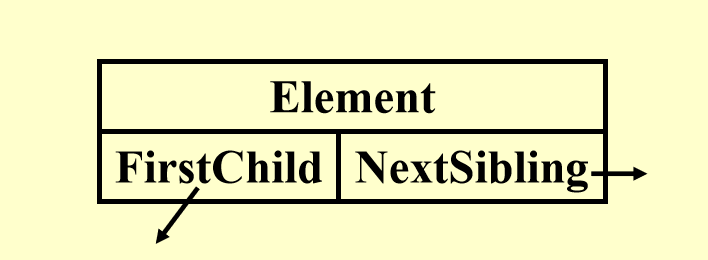
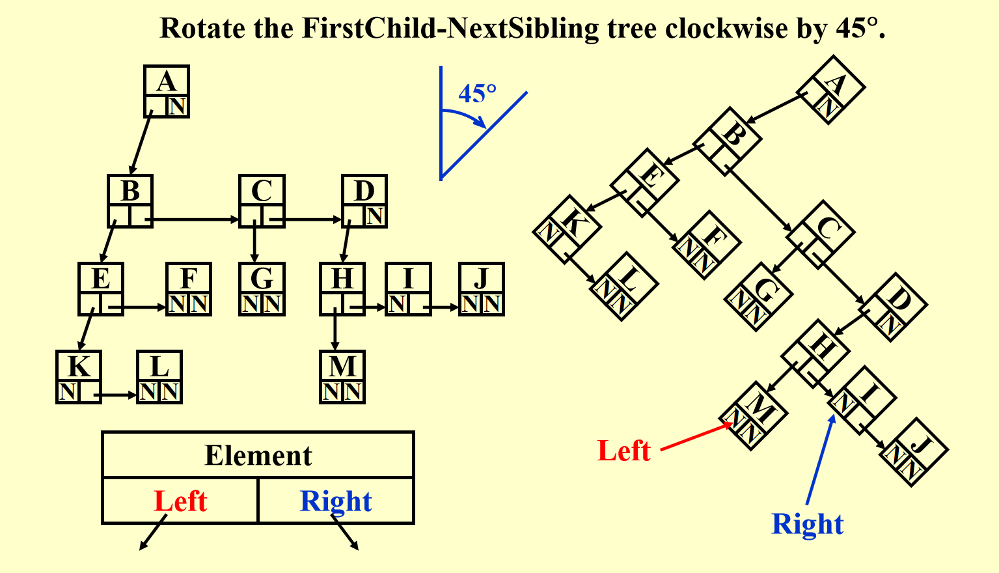
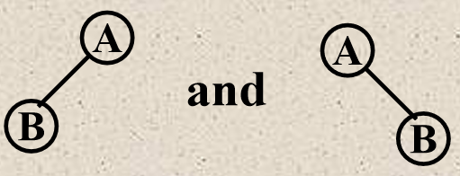
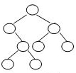
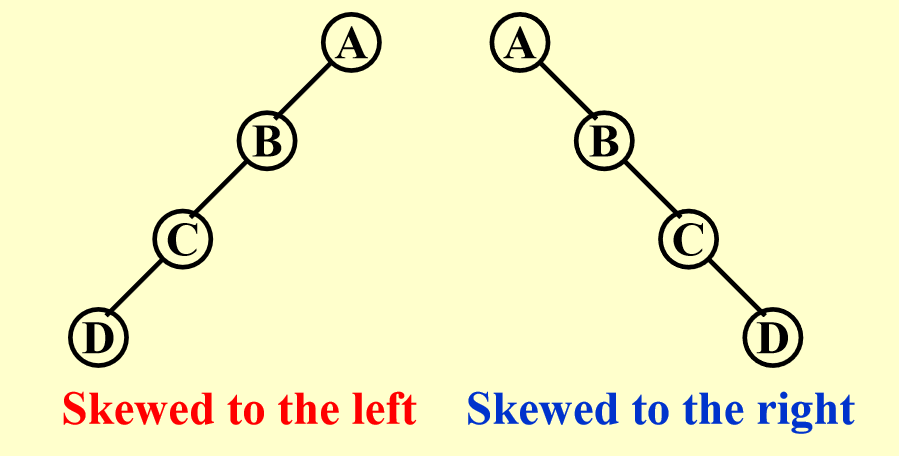
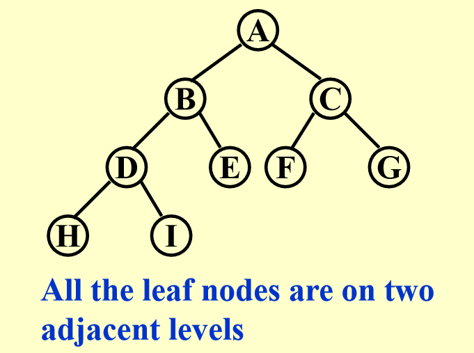
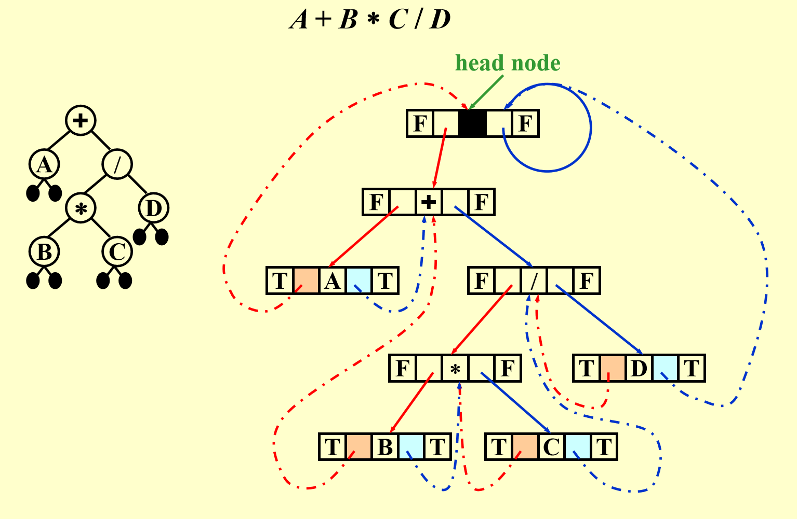
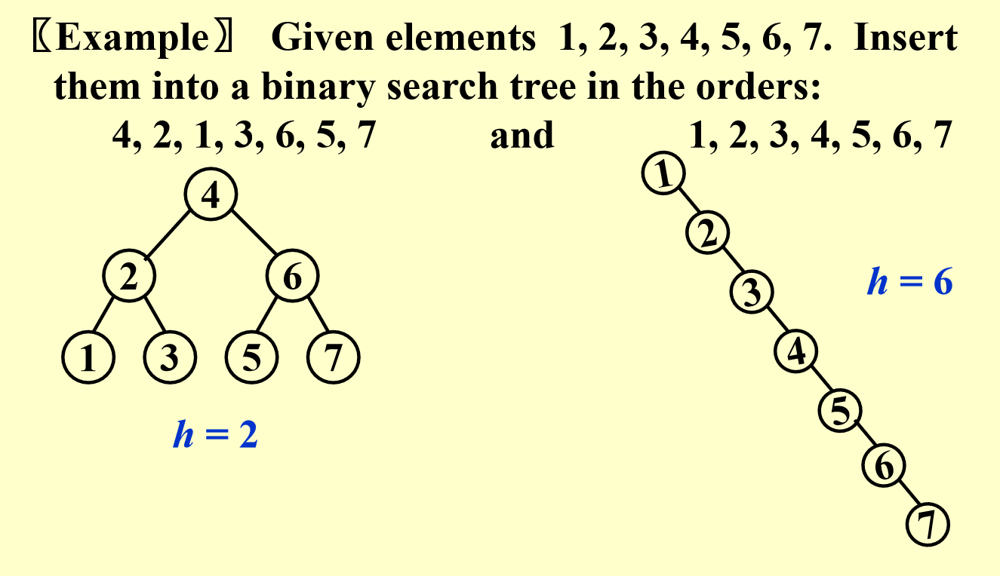

树、二叉树
一、基本の术语
- 树：节点的集合，包含一个根节点和若干子树。
- 根节点 (Root)：树的唯一起始节点。
- 叶子节点 (Leaf)：度为0的节点（无子节点）。
- 父节点 (Parent)：拥有子树的节点。
- 子节点 (Children)：父节点的直接下级节点。
- 兄弟节点 (Siblings)：同一父节点的子节点。
- 深度 (Depth)：从根到该节点的唯一路径长度（根深度为0）。
- 高度 (Height)：从节点到最深叶子的最长路径长度（叶子高度为0）。
- 路径：节点序列，每个节点是下一节点的父节点。
- 度(degree)：节点的度表示拥有的子树数目；树的度是所有节点的度的最大值。
二、树的表达方式
- 列表表示：用嵌套括号表示层次结构（如
A(B(C), D)）。 - FirstChild-Sibling表示法：每个节点记录第一个子节点和下一个兄弟节点，通过旋转45°可转换为二叉树结构。


三、二叉树（ Binary Tree ）
1. 定义
每个节点最多有两个子节点（称为左子节点和右子节点）的树。
Note
In a tree, the order of children does not matter. But in a binary tree, left child and right child are different.

The binary trees above are different.
2. 遍历方式
我们假定树结构体定义如下：
struct TreeNode {
int Element;
TreeNode* left;
TreeNode* right;
TreeNode(int val) : Element(val), left(nullptr), right(nullptr) {}
};
前序遍历：根 → 左子树 → 右子树
/* 递归实现 */
void preorderTraversal(TreeNode* root) {
if (root == nullptr) return;// 空树
cout << root->val << " ";
preorderTraversal(root->left);
preorderTraversal(root->right);
}
/* 迭代实现 */
void preorderTraversal(TreeNode* root) {
if (root == nullptr) return;
stack<TreeNode*> s;// 辅助栈
s.push(root);
while (!s.empty()) {
TreeNode* node = s.top();
s.pop();
cout << node->val << " ";
if (node->right) s.push(node->right);
if (node->left) s.push(node->left);
}
}
中序遍历：左子树 → 根 → 右子树
/* 递归实现 */
void inorderTraversal(TreeNode* root) {
if (root == nullptr) return;// 空树
inorderTraversal(root->left);
cout << root->val << " ";
inorderTraversal(root->right);
}
/* 迭代实现 */
void inorderTraversal(TreeNode* root) {
stack<TreeNode*> s;// 辅助栈
TreeNode* current = root;
while (current != nullptr || !s.empty()) {
while (current != nullptr) {
s.push(current);
current = current->left;// 一直向左遍历，直到空
}
current = s.top();
s.pop();
cout << current->val << " ";
current = current->right;// 最后再转回右节点
}
}
后序遍历：左子树 → 右子树 → 根
/* 递归实现 */
void postorderTraversal(TreeNode* root) {
if (root == nullptr) return;
postorderTraversal(root->left);
postorderTraversal(root->right);
cout << root->val << " ";
}
/* 迭代实现 */
void postorderTraversal(TreeNode* root) {
if (root == nullptr) return;
stack<TreeNode*> s;
TreeNode* lastVisited = nullptr;
while (!s.empty() || root != nullptr) {
if (root != nullptr) {
s.push(root);
root = root->left;
} else {
TreeNode* peekNode = s.top();
if (peekNode->right != nullptr && lastVisited != peekNode->right) {
root = peekNode->right;
} else {
cout << peekNode->val << " ";
lastVisited = s.pop();
}
}
}
}
层序遍历：按一层一层的顺序遍历树的节点。
void levelorderTraversal(TreeNode* root) {
if (root == nullptr) return;
queue<TreeNode*> q;
q.push(root);// 根入队
while (!q.empty()) {
TreeNode* node = q.front();// 获得队首元素
q.pop();// 队首元素出队
cout << node->val << " ";
if (node->left) q.push(node->left);// 左子树入队
if (node->right) q.push(node->right);// 右子树入队
}
}
3. 表达式与树的互相转换
3.1 表达式转化为树
| 表达式类型 | 遍历方式 | 树构建方法 |
|---|---|---|
| 中缀 | 中序遍历 | 根节点可以通过左右个数判断，左边为根节点的左子树，右边为根节点的右子树 |
| 后缀 | 后序遍历 | 根节点为最后一个，从左到右构建子树，一步一步拼接 |
| 前缀 | 前序遍历 | 根节点为第一个，从左到右构建子树，一步一步拼接 |
Example
(FDS HW4) 例题：Given the shape of a binary tree shown by the figure below. If its inorder traversal sequence is { E, A, D, B, F, H, C, G }, then the node on the same level of C must be:

显而易见，F为根节点，左侧为{E, A, D, B}，右侧为{H, C, G}，所以E为C的兄弟节点。
(FDS HW4 Derivative) 例题：Given the shape of a binary tree shown by the figure which has been mentioned in the previous question. If its preorder traversal sequence is { E, A, D, B, F, H, C, G }, then the node on the same level of C must be:
显而易见，E为根节点，左侧为{A, D, B, F}，右侧为{H, C, G}，所以D和G为C的兄弟节点。
3.2 树转化为表达式
按照对应的遍历读树，写成表达式即可。
例题：某表达式的前序遍历树如下，求前序表达式。
前序表达式为 +A*BC。
4. 两类特别的二叉树
4.1 斜二叉树（ Skewed Binary Trees ）

- 左斜二叉树：所有节点只有左子树的二叉树。
- 右斜二叉树：所有节点只有右子树的二叉树。
4.2 完全二叉树（ Complete Binary Tree ）

5. 二叉树的节点计算性质
- 每层最大节点数
第 \(i\) 层的最大节点数为 \(2^{i-1}\)（\(i \geq 1\)）。 - 总节点数
深度为 \(k\) 的二叉树最多有 \(2^k - 1\) 个节点（\(k \geq 1\)）。 - 叶子节点与度为2节点的关系
对于非空二叉树，叶子节点数 \(n_0 = n_2 + 1\)（\(n_x\) 代表度为\(x\; (x = 0, 1, 2)\)的节点的个数）。
Note
证明思路：
总节点数 \(n = n_0 + n_1 + n_2\)。
分支数 \(B = n_1 + 2n_2\)（每个度为1的节点贡献1个分支，度为2的贡献2个分支）。
总节点数 \(n = B + 1\)（根节点无父分支）。
联立方程可得 \(n_0 = n_2 + 1\)。
事实上，这一类型的题目都用上述这几个公式就可以解决。
Example
(FDS HW6)If a complete binary tree with 137 nodes is stored in an array (root at position 1), then the nodes at positions 128 and 137 are at the same level.
先说答案，答案是128和137在同一层。
证明思路：\(137\le 2^h - 1\)，因此有\( h \geq 8 \)，而前面七层有\(2^7-1=127\)个节点，所以可以得到二者在同一层。
四、线索二叉树
1. 作用
普通二叉树有 n+1 个空指针，浪费空间，而线索化利用空指针指向节点的前驱或后继，加速遍历。
2. 规则
- 若左子为空，指向序列前驱。
- 若右子为空，指向序列后继（也就是说只需要看那个
{A, B, C, ...}序列中的前后就好）。 - 必须包含（没有就自己添加）头节点，左指针指向树的根节点。
3. 示例
表达式树 A + B * C / D 的线索化。

比如对于B而言，其中序表达式（或者说中序遍历）的两侧正好是+号和*号，那么就指向这俩即可。
五、二叉搜索树（ Binary Search Tree, BST ）
1. 定义及特点
- 二叉树，可以为空。
- 非空时满足以下条件：
- 每个节点有唯一整数值。
- 左子树所有节点的键小于根节点的值。
- 右子树所有节点的键大于根节点的值。
- 左、右子树也是二叉搜索树。
- 同一深度下的节点值按大小有序排列。
Example
(FDS HW5) 判断题：In a binary search tree, the keys on the same level from left to right must be in sorted (non-decreasing) order.
答案为True。对于同一个父母节点，其一定满足左<右；而又跟据左子树所有节点的键小于根节点的值，右子树所有节点的键大于根节点的值显然可以得到这一结论。
2. ADT 操作
此处声明using SearchTree = TreeNode*;
2.1 MakeEmpty(T)：清空树。
// 清空树并释放内存
SearchTree MakeEmpty(SearchTree T) {
if (T != nullptr) {
MakeEmpty(T->Left);
MakeEmpty(T->Right);
delete T;
}
return nullptr;
}
2.2 Find(X, T)：查找键为 X 的节点。
// 查找节点（用递归实现）
TreeNode* Find(int X, SearchTree T) {
if (T == nullptr) return nullptr;
if (X < T->Element)
return Find(X, T->Left);
else if (X > T->Element)
return Find(X, T->Right);
else
return T;
}
2.3 FindMin(T)/FindMax(T)：查找最小/最大键节点。
// 查找最小值节点（递归）
TreeNode* FindMin(SearchTree T) {
if (T == nullptr) return nullptr;
return (T->Left == nullptr) ? T : FindMin(T->Left);
}
// 查找最大值节点（迭代）
TreeNode* FindMax(SearchTree T) {
if (T != nullptr)
while (T->Right != nullptr)
T = T->Right;
return T;
}
2.4 Insert(X, T)：插入键 X。
// 插入节点（递归）
SearchTree Insert(int X, SearchTree T) {
if (T == nullptr) {
T = new TreeNode(X); // 创建新节点
} else if (X < T->Element) {
T->Left = Insert(X, T->Left);
} else if (X > T->Element) {
T->Right = Insert(X, T->Right);
}
// 若X已存在，忽略插入
return T;
}
// 插入节点（迭代版本）
SearchTree Insert_Iterative(int X, SearchTree T) {
TreeNode** curr = &T; // 使用二级指针来直接操作树（太复杂所以还是递归好啊）
while (*curr != nullptr) {
if (X < (*curr)->Element) {
curr = &((*curr)->Left); // 向左子树移动
} else if (X > (*curr)->Element) {
curr = &((*curr)->Right); // 向右子树移动
} else {
return T; // 重复键，直接返回原树
}
}
*curr = new TreeNode(X); // 在空位置创建新节点
return T;
}
2.5 Delete(X, T)：删除键 X。
Note
If there are not many deletions, then lazy deletion may be employed: add a flag field to each node, to mark if a node is active or is deleted. Therefore we can delete a node without actually freeing the space of that node. If a deleted key is reinserted, we won’t have to call malloc again.(But too many deletions may cause waste of the memory)
SearchTree Delete(int X, SearchTree T) {
if (T == nullptr) {
throw std::runtime_error("Element not found");
} else if (X < T->Element) {
T->Left = Delete(X, T->Left);
} else if (X > T->Element) {
T->Right = Delete(X, T->Right);
} else {
// 找到要删除的节点
if (T->Left && T->Right) { // 双子节点
SearchTree tmp = FindMin( T->Right ); // 右子树最小值替换
T->Element = tmp->Element;
T->Right = Delete(T->Element, T->Right); // 递归删除被替换节点
} else { // 单子或叶子节点
SearchTree tmp = T;
T = (T->Left != nullptr) ? T->Left : T->Right;
delete tmp;
}
}
return T;
}
Example
(FDS HW5) 例题：Given a binary search tree with its preorder traversal sequence { 8, 2, 15, 10, 12, 21 }. If 8 is deleted from the tree, which one of the following statements is FALSE?
A.One possible preprder traversal sequence of the resulting tree may be { 2, 15, 10, 12, 21 }
B.One possible preprder traversal sequence of the resulting tree may be { 10, 2, 15, 12, 21 }
C.One possible preprder traversal sequence of the resulting tree may be { 15, 10, 2, 12, 21 }
D.It is possible that the new root may have 2 children
根据前面对于前序的讲解，这棵二叉搜索树的结构可以很轻易得到：
而在二叉搜索树中，删除节点后，通常由该节点的中序后继（即右子树中的最小节点）或中序前驱（即左子树中的最大节点）来替代。（在这里就是2或者10）因此，答案一👁盯真，就是C了。Retrieve(P)：获取节点 P 的值。
// 获取节点的值
int Retrieve(TreeNode* P) {
if (P == nullptr)
throw std::runtime_error("Null node exception");
return P->Element;
}
3. 二叉搜索树的构建
树高与插入顺序相关：
- 最优情况：平衡插入（如中位数优先），树高为 \(O(\log n)\)。
- 最差情况：顺序插入（如升序或降序），树高为 \(O(n)\)。

- 插入序列
4, 2, 1, 3, 6, 5, 7生成平衡树（高度为2）。 - 插入序列
1, 2, 3, 4, 5, 6, 7生成右斜树（高度为6）。